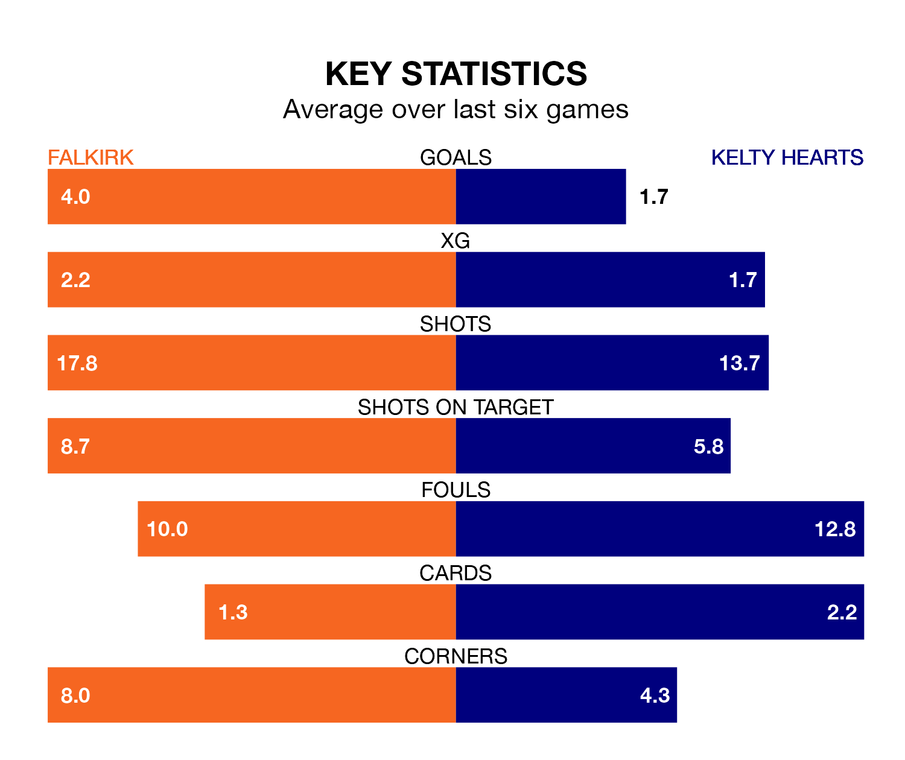

Falkirk are heavy favourites to keep all three points at home in Saturday's kick-off against Kelty Hearts.
The Bairns, who sit top of League One with 33 games played, are priced at 1.2 to seal victory at the Falkirk Community Stadium.
Sitting five places and 44 points behind them in the table, Kelty Hearts are 8.1 to win with *Betting Company*, while the draw is at 6.6.
With 89 goals in 33 games so far this season, Falkirk are the league's highest scorers with 2.7 goals per game. And they are conceding fewer than average, letting in 21 goals at a rate of 0.6 per game.
Kelty Hearts, meanwhile, are below average scorers, with 1.4 goals per game, compared to a league average of 1.6. They have conceded 1.7 goals per game.
The Bairns are in exceptional form in League One, with six wins and no losses from their last six games.
With four wins and two losses over that period, the away side's form is much worse – they have taken 12 points from 18, compared to the hosts' 18.
In Callumn Morrison, Falkirk have the league's sharpest shooter so far this season. He has notched 22 goals in 29 appearances.
His goal rate of one every 107 minutes is quicker than that of Alfie Bavidge, Kelty Hearts's top scorer with a goal every 213 minutes, and a total of nine goals in 22 games.
In the last 10 years, Falkirk and Kelty Hearts have played each other on seven occasions. Falkirk won four of them, Kelty Hearts two, and they drew once.
On average, the Bairns scored 1.7 goals and Kelty Hearts 1.1 in those matches.
Their last meeting was on February 24, when Falkirk won 1-0 away.
Falkirk's last match was on Saturday, a 2-0 win against Hamilton Academical, with Aidan Nesbitt and Ross MacIver getting the goals for the Bairns.
Kelty Hearts beat Stirling Albion 1-0 last time out, also on April 13, with Stefan McCluskey on the scoresheet.
Updated: 11:31 (UTC), 15/04/24